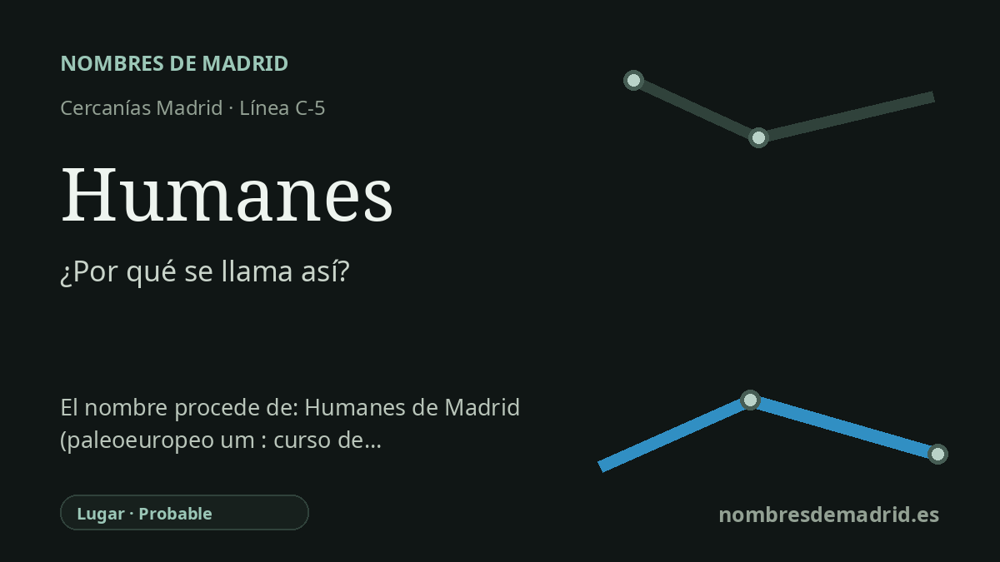

Publicado el · Investigación de Nombres de Madrid · Cómo verificamos cada origen · 8 fuentes consultadas
Respuesta rápida
La estacion de Humanes toma su nombre de Humanes de Madrid, el municipio al que sirve en el extremo sur de la linea C-5 de Cercanias. El toponimo se entiende mejor como un nombre vinculado al agua, aunque las fuentes discrepan entre una raiz hidronimica paleoeuropea y el latin humidus, 'humedo'.
La historia del nombre
La estacion de Humanes toma su nombre de Humanes de Madrid, el municipio en el que se encuentra. Hoy funciona como terminal sur de muchos servicios de la linea C-5 de Cercanias Madrid, y las fuentes oficiales de transporte registran la estacion sencillamente como Humanes, con acceso desde la calle Cenicientos y ubicacion municipal en Humanes de Madrid.
Detras del nombre de la estacion hay un toponimo mucho mas antiguo. Humanes aparece en documentacion medieval en 1141, cuando Alfonso VII dono la villa a Pedro Brimonis o Pedro Brimon. El documento situa el asentamiento entre Madrid y Toledo, lo que ayuda a explicar que en distintas epocas se distinguiera el lugar como Humanes de Toledo o Humanes de Madrid.
El origen de la palabra Humanes no esta completamente cerrado. Una hipotesis moderna muy repetida, atribuida al linguista Edelmiro Bascuas, relaciona Humanes con una base hidronimica paleoeuropea vinculada a cauces o corrientes de agua. En cambio, un articulo consultado de Fernando Jimenez de Gregorio en los Anales del Instituto de Estudios Madrilenos lo deriva del latin humidus, 'humedo', y lo apoya en el paisaje local: arroyos, zonas encharcables, pozos, lagunas y nombres como Las Arroyadas, El Charco y La Laguna.
Esa lectura relacionada con el agua encaja mejor de lo que podria parecer a primera vista. Humanes de Madrid se asienta en una zona bastante llana del sur madrileno, historicamente agricola y recorrida por pequenos cursos como Valdehondillo del Prado y Las Arroyadas. El sistema del arroyo Guaten o Humanejos tambien se vincula con este entorno, lo que refuerza que vecinos y estudiosos asociaran el toponimo a terrenos humedos y no a una persona ni a un rasgo urbano moderno.
En el ferrocarril, el nombre es anterior al servicio actual de Cercanias. Humanes ya tuvo presencia ferroviaria en la ruta Madrid-Caceres-Portugal en el siglo XIX, mientras que la prolongacion de la C-5 hasta Humanes entro en servicio el 28 de febrero de 2004. La interpretacion mas prudente tiene, por tanto, dos capas: la estacion se llama asi por el municipio, y el nombre del municipio es probablemente un toponimo relacionado con el agua, con la explicacion latina humidus mejor documentada en fuentes madrilenas consultadas y la teoria hidronimica paleoeuropea como alternativa plausible pero menos directamente comprobada.